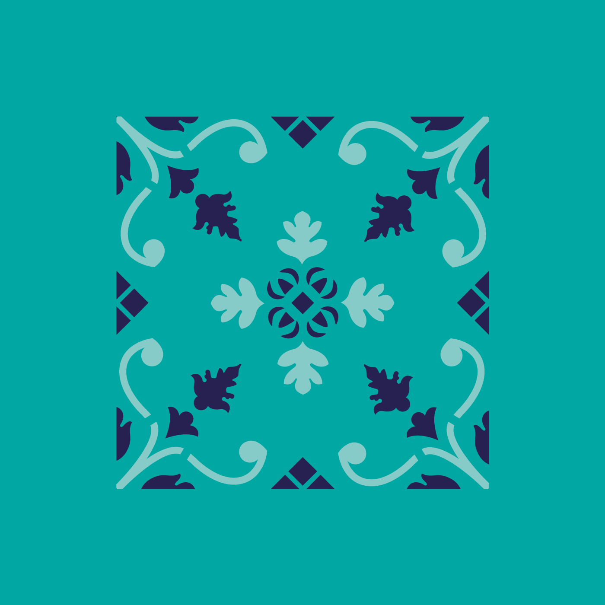
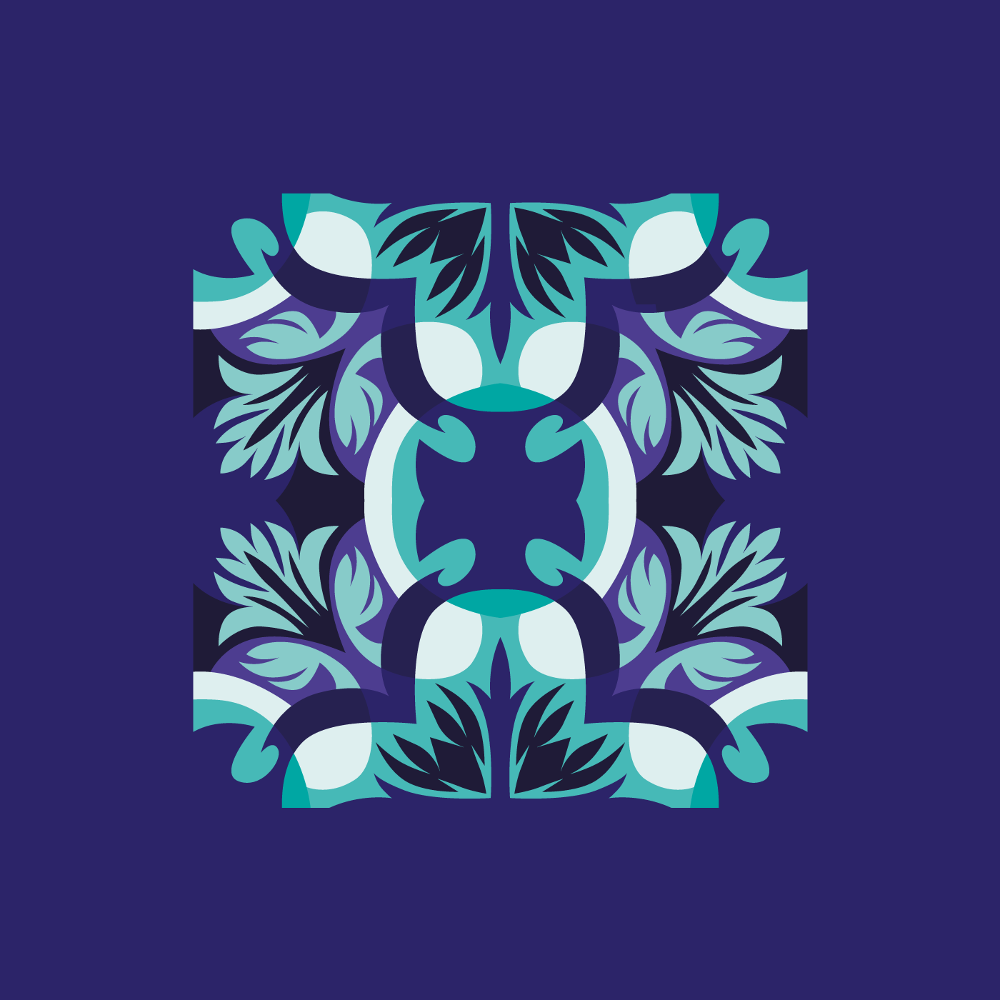

Lisbon Tiles
Playground
Home
Playground
Submit your Tile
Home
Playground
Submit your Tile
Welcome to Lisbon Tiles Playground:
A free colection of SVG repeatable patterns based on Lisbon tiles and their history.
browse
patterns

O Botequim
Rua da Verônica
Fonte de Sintra

Livraria João da Mata
Rua dos Olivais
Café da Feira da Ladra